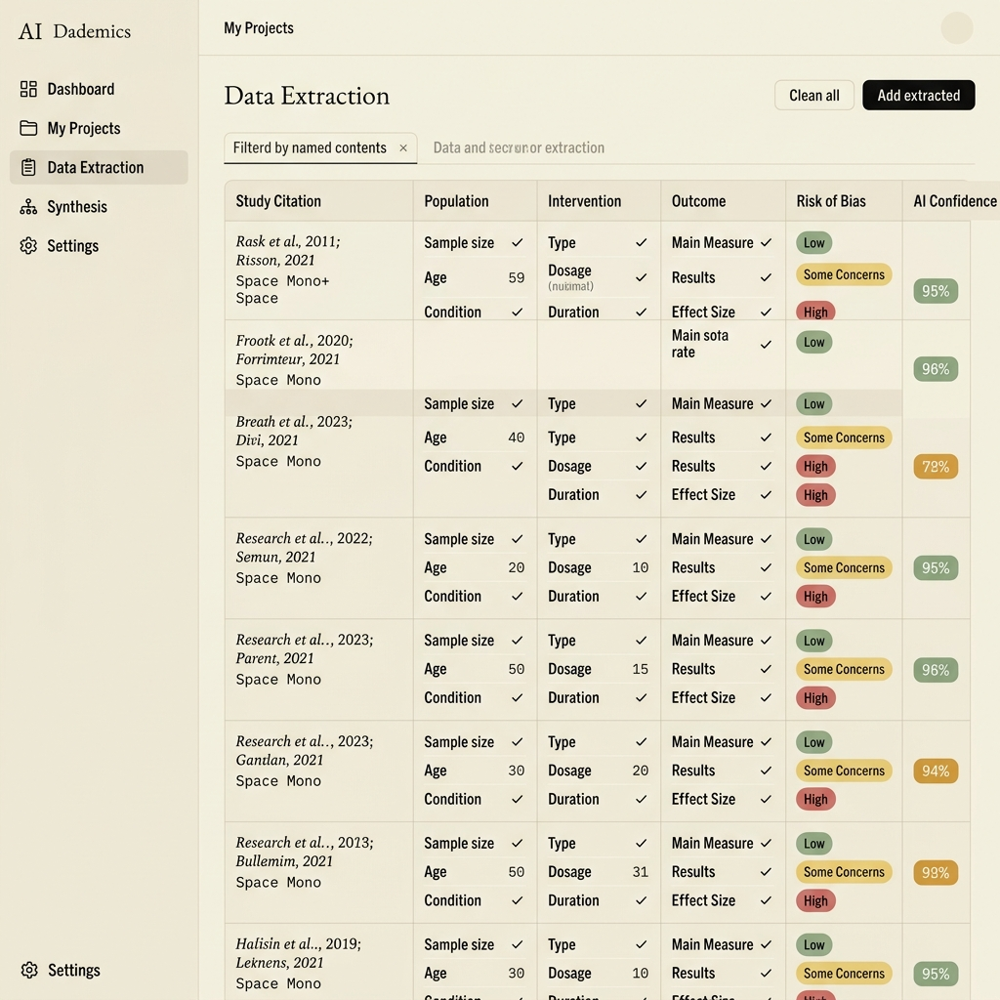

Study screening
Work through titles, abstracts, and full texts against the eligibility criteria that define your review.
From a research question to structured evidence.
AI-assisted systematic reviews, with you in control.
Explore the interface. Early access is opening soon.
01 / The research workspace
Bring the moving parts of a systematic review into one considered workflow. Keep the decisions that matter in human hands.
Work through titles, abstracts, and full texts against the eligibility criteria that define your review.
Define the fields you need. Review extracted study characteristics, outcomes, and statistics in a consistent table.
Bring extracted values back to the original paper, so verification stays part of the workflow.
Keep expert judgment at the center. Examine the AI-assisted output before it becomes part of your evidence.
Give ambiguous findings the attention they deserve. Resolve questions through the source and your review protocol.
Organize the evidence for checking, analysis, and reporting, with a clear record of your review process.
02 / A closer look
A workspace for the papers, the data, and the decisions between them.

03 / From question to evidence
Start with your research question. Define your eligibility criteria and the data your review needs to capture.
Explore the workflow ↗Screen your studies and organize extraction. Use AI assistance to support the repetitive parts of the process.
See the workspace ↗Verify against the full text, resolve uncertainty, and prepare the structured evidence for your next step.
Read our approach ↗04 / Designed for careful research
Systematic reviews need more than a quick answer. RadExtract is being developed around structured evidence and researcher oversight.
In development. Validation work is in preparation; this page makes no claim of validated accuracy.
05 / A few things to know
A little more about the platform and where we are today.
RadExtract is an AI-assisted research platform in development for systematic-review screening and data extraction. It is designed to help researchers organize evidence while retaining control of review decisions.
The research-question panel is an interface preview. It lets you explore topics and filters, but it is not connected to a live search service. Join the early-access list for availability updates.
No. Researchers remain responsible for the review protocol, eligibility decisions, verification of extracted data, interpretation, and reporting.
Validation work is in preparation. We will distinguish evaluated results from development targets as evidence becomes available.
Use the early-access page to view the existing registration options. Availability and product details may change during development.
Your next research question starts here
Help shape a more considered way to move from research papers to evidence.
Get early access ↗Currently in development. Built with researcher oversight in mind.